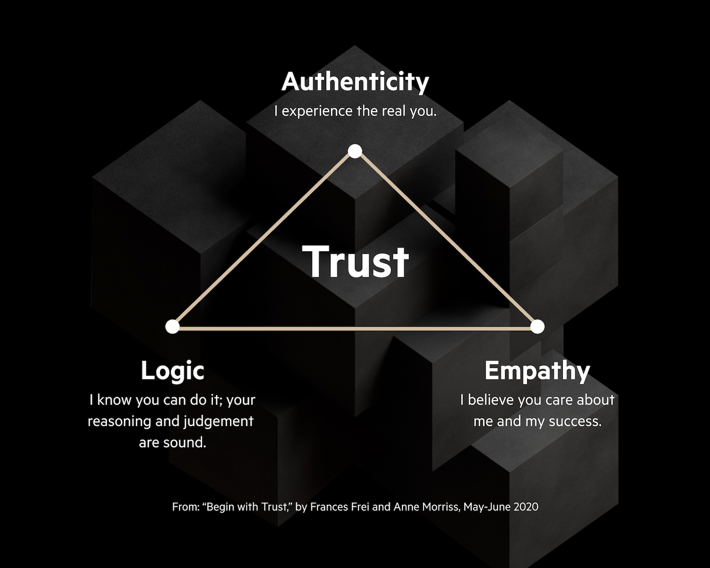

15. The Trust Triangle
Link: Hbr: begin with trust
Developed by Frances Frei, this model indicates that trust in another is based on three different aspects.
Contents
- 1. Authenticity - TT
- 2. Empathy - TT
- 3. Logic - TT
Next: 1. Authenticity - TT
Skip to: The Tribal Instincts